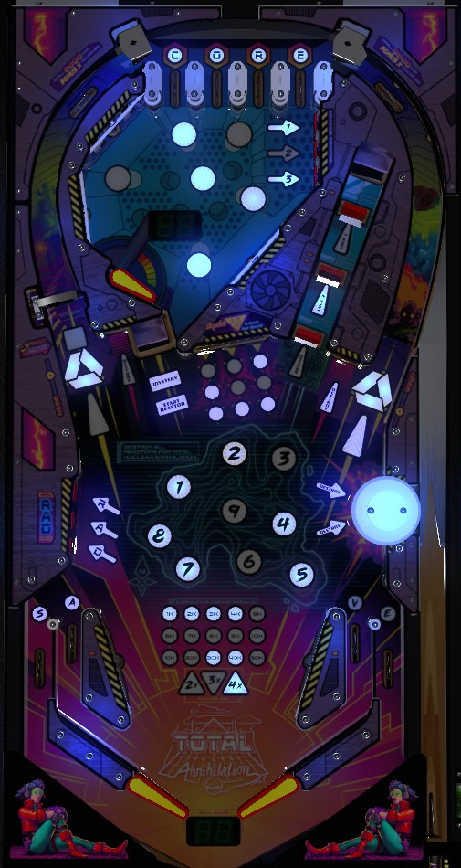

Start multiball by locking 2 balls at the inline drop targets, then releasing them. Destroy Reactors by completing the 3-bank of center standup targets until the grid is lit, then hitting switches in the upper half of the playfield until the display in the upper playfield reaches 100%, then hitting all of the lit targets in the lower playfield. Ball save is given at the start of each ball, at the beginning of multiball, and after destroying a Reactor; use ball save wisely, taking dangerous shots at the 3-bank or lit Reactor targets only when ball save is on or multiball is running, if possible.
Total Nuclear Annihilation has three flavors of skill shot: two involve the top lanes, and one is a reflex super skill shot.
At the start of each ball, one of the four CORE top lanes will be flashing. Both flippers can be used as lane change, rotating which top lane is flashing. Making the flashing top lane scores the first two varieties of skill shot. If you do not use flipper lane change after plunging, you receive the Hands-Free Skill Shot, which scores 50,000 points, immediately lights one Drain Save at the in/out lanes, and immediately lights the left scoop for Start Reactor. If you do use flipper lane change after plunging, you get the regular skill shot instead, which scores 50,000 points and lights one Drain Save but does not instantly qualify the next Reactor. Neither of the one-way gates at the top of the playfield are active during the skill shot, so making it to the top lanes at all requires a precise-power plunge, with plunges that are too hard or too soft coming down the left or right orbit respectively.
The third variety of skill shot requires a full plunge that comes down the left orbit and is directed to the left flipper; if locks are lit at the inline drop target lane, a secret skill shot worth 40,000 points is earned by immediately flipping the ball into the lock lane as soon as it enters the playfield. It does not seem possible to earn this secret skill shot for starting multiball; it must be a regular lock.
If a skill shot is attempted and failed, causing the ball to roll back down into the shooter lane, the game will autoplunge the ball at full strength and disqualify all skill shots. It may be desirable to intentionally short plunge so that the ball comes down the right orbit to the right flipper at a controlled speed; if this approach is taken, consider nudging the right side of the game to push the ball left as it comes down the right orbit to ensure that the ball makes it to the right flipper instead of running into the pop bumper or the top of the right slingshot on the way down and going out of control.
Total Nuclear Annihilation is intentionally a very fast-playing, difficult game, and it would be unreasonable to expect someone to complete all of the game's goals in just 3 balls. As a result, ball saves and multiballs are given relatively liberally. Knowing when these features are available and taking advantage of them by making dangerous shots with ball save active or multiple balls in play is incredibly important for playing Total Nuclear Annihilation for any extended length of time.
Conventional ball save is represented by the green segment display located between the flippers, which I refer to simply as the flipper display. If you have at least 10 seconds of ball save, the flipper display will show your remaining ball save time in seconds. If you have less than 10 seconds, the flipper display shows your remaining ball save time in seconds and tenths. If the flipper display shows "Eb", you have earned at least one extra ball, but you currently have 0 ball save time. If the flipper display is completely blank, you have 0 ball save and no extra balls.
By default, about 12 seconds of ball save are given at the start of each ball or at the start of multiball. The Enable Ball Save mystery award gives about 10 seconds of ball save. Destroying a Reactor also gives about 10 seconds of ball save. A brief ball save (about 2 seconds) is also given when shooting either scoop, as an anti-frustration measure in case the scoop is set up to shoot the ball down the center drain.
Use ball save wisely, aiming for the more dangerous "keypad" 3-bank or lit Reactor targets only when ball save is on to limit the risk of those targets deflecting the ball straight toward the center drain or an out lane.
The lights on the in/out lanes represent Drain Save. Roll through an unlit lane to light it. Lighting any 3 letters in the word Save awards one level of Drain Save, indicated by the letter you did not collect starting to flash. Lane change will rotate which lanes are lit or flashing. If a ball goes down an out lane that is flashing when there is no ball save running, that ball will be saved and returned to the shooter lane at the cost of one Drain Save. Up to 6 Drain Saves can be accumulated at once: the deeper in the rainbow that the flashing lane is lit, the more Drain Saves you had built up (red for 1, orange for 2, etc.). Unused Drain Saves are worth 10,000 points each at the end of the ball. By default, unused Drain Saves are carried over from ball to ball, but this can be disabled.
Multiball is relatively easy to start, and doesn't really get harder as the game goes on.
At the start of the game, only the back drop target in the lock lane is raised. Hit this target to score 20,000 points and raise the center inline drop target, which locks one ball. Repeat this process to lock a second ball between the front and middle targets. When two balls are locked, hitting the front drop target causes all three inline drop targets to fall, releasing both locked balls to start a 3-ball multiball.
During multiball, jackpots are available at the inline drop targets. The front drop target scores a 1x jackpot, the middle drop target scores a 2x jackpot, the back drop target scores a 3x jackpot, and shooting into the right saucer behind all three drop targets scores a 5x jackpot. Jackpot values are equal to 5,000 points times the current reactor number, times the number of balls in play, times the multiplier associated with whichever target was hit. Making a super jackpot at the right scoop also adds a ball to the playfield, unless there are already 4 balls in play. All playfield scoring, not just the jackpots, is multiplied by the number of balls in play. When multiball starts, a 12-second ball save is awarded, and the drop targets all stay down for about 3 seconds, allowing for a quick super jackpot and add-a-ball if you can send one ball immediately back into the lock lane. If 5 seconds pass without any type of jackpot being scored, the drop target furthest from the flippers is raised, so to score a super jackpot, you must make multiple shots to the lock lane in quick succession.
When multiball ends, you must relight your locks for the next multiball by knocking down all remaining inline drop targets, then shooting into the back right scoop (with no time limit). Drop targets are not reset when multiball ends, so if you return to single ball play when a triple jackpot or super jackpot ready, it will take fewer shots to qualify the next multiball than if you had not collected any jackpots at all. It is almost always safer to backhand the lock lane from the right flipper, so learning how to transfer the ball from left to right is a very welcome skill. Use multiball (and the ball save you get from starting it) to clear dangerous shots to the center 3-bank or to Destroy shots with the safety net of an additional ball in play.
Due to the physical nature of the lock mechanism, lock stealing is always available in a multiplayer game.
UPDATE to multiball rules in 1.6.0 code, released 13 December 2025: if you play multiball a second time within the same Reactor, all jackpot values are reduced to 55% of their normal value. If you play multiball a third time (or more) within the same Reactor, jackpot values are further reduced to 10% of their original value. To restore jackpots to full value, you must destroy a Reactor: see the section below for details on this.
Total Nuclear Annihilation tasks the player with destroying 9 nuclear reactors. All Reactors have the same basic order of operations:
Reactor Value: The Reactor Value can be built at any time during gameplay. Each spin of the spinner and any switch hit within the upper playfield chamber adds points to the Reactor Value. The further you are in the game, the more Reactor Value each switch is worth, so that it always takes roughly the same amount of time to max out the Reactor Value. The base Reactor Value is 25,000 points for Reactor 1, and increases by 12,500 for each subsequent Reactor; the maximum Reactor Value is always equal to 3x the base value. Completing the 1-2-3 targets in the upper playfield chamber in order will instantly max out the current Reactor's value. During Overheat the Reactor or Destroy the Reactor, you can complete the "keypad" again by hitting all 3 of the center standup targets 3 times each to fully light the grid red; doing so will score a Reactor Jackpot worth one-half of the current Reactor Value. Destroying a Reactor scores the entire current Reactor Value, multiplied by the number of balls in play if Multiball was running. This is by far the largest source of points in the game; having a multiball in progress during Destroy the Reactor is highly recommended.
The ones digit of your score indicates the number of Reactors destroyed in the current game. If you destroy all 9 Reactors, the entire game instantly ends. You score a Total Nuclear Annihilation bonus equal to the sum of all 9 of the Reactor values you collected. If you have additional balls to play, such as earned extra balls or by completing Reactor 9 during ball 1 or ball 2, the Total Nuclear Annihilation bonus will be recollected once for each remaining ball you have yet to play, but you no longer have control at this point, since power to the flippers and slingshots is cut as soon as Reactor 9 is destroyed. Finishing the game by completing Reactor 9 is a highly impressive feat all its own, but if you are strictly concerned with score and score alone, you may want to avoid destroying Reactor 9 and ending the game. Instead, especially if you are playing on a code revision older than 1.6.0, consider playing and replaying multiball as many times as you can, earning as many highly multiplied Reactor 9 jackpots as you can before ending the game by draining or completing Reactor 9 accidentally.
An instant extra ball is awarded for starting Overheat the Reactor on Reactors 3 and 6. I am not sure if extra ball can be set to a point value, or what that point value would be if such an option exists.
At any time other than when Destroy the Reactor is running, hit flashing targets in the 3-bank of standups on the left to spell RAD in order. Spelling RAD lights the left scoop for a Mystery award. Multiple qualified Mystery awards can be stacked, which causes the scoop to immediately be lit again after a Mystery award is collected. The Mystery animation flashes several fake-out answers on the screen before settling on a real award; several of the fake-out awards are joke awards and cannot actually be received. Real awards include:
This list may not be exhaustive.
The left spinner starts each ball scoring 110 points per spin. After approximately 50 spins of the spinner are recorded in a single ball, or after receiving the Enable Super Spinner mystery award, the spinner will be lit for 1,010 points per spin for the rest of that ball.
Lighting 1-2-3 in order at the bank of standup targets in the upper chamber instantly maxes out the value of the current Reactor.
Total Nuclear Annihilation has a conventional in/out lane setup, with the four lanes forming the letters in Save. See the Drain Saves paragraph under "Setting up for success" above.
End of ball bonus on Total Nuclear Annihilation has three components.
Game settings determine whether qualified Drain Saves carry over from ball to ball; by default, they do, but this can be disabled. Target Bonus, bonus multiplier, and Reactor Bonus are never carried over from ball to ball.